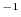

Read in SAXS data. Make sure that sampling of is the same as specified in saxsdata.ini_saxs(). The file is text format, containing 3 columns: spatial frequency in Å , Intensity, and experimental error (if determined). Comments start with '#'.